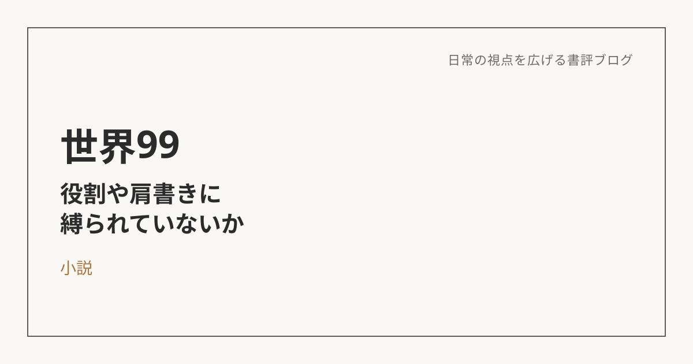

世界99：役割や肩書きに、気づかないうちに縛られていないか
この本について
村田沙耶香による本作は、幼少期から確固たる「自分」を持たず、相手や状況に応じて人格を切り替えて生きてきた主人公の物語。仕事中の自分、家族といる自分、友人といる自分というふうに、場面ごとに違う人格を使い分けながら生きている。
「本当の自分」ではなく、環世界の話として読む
生物学には「環世界」という考え方がある。生物はそれぞれ、同じ一つの客観的な世界を生きているわけではなく、主体ごとに意味を持つものが異なり、時間や空間の感じ方すら違う、という視点だ。この考え方を借りると、主人公のそれぞれの人格は、優劣のある「本物」と「偽物」ではなく、それぞれの状況に応じて立ち上がる、別々の環世界なのだと捉え直せる。
人格を切り替えることは、環世界を移すこと
自分にとっての「仕事中の自分」「家族といる自分」も、同じように説明がつく気がする。人格そのものは変わっていなくても、その場その場で意味を持つものが変わる。職場では成果や評価が大きな意味を持つ。家族といるときは、また別のものが大きな意味を持つ。それは器用に演じ分けているというより、環世界そのものが切り替わっているという方が近いのかもしれない。
役割や肩書きは、実はそこまで本質的じゃない
物語の中で主人公が向き合っているのは、最終的には「自分とは何者か」という問いそのものよりも、そもそも「何者か」であり続ける必要はあるのか、という問いだと思う。仕事には役職があり、家庭にも役割がある。それ自体は悪いものではない。ただ、そうした役割や肩書きは、思っているほど本質的なものではなく、今の社会の中で「当たり前」とされている価値観に、知らないうちに影響されているだけなのかもしれない。役割や肩書きに縛られて、気づかないうちに疲れている自分がいる。そのことに、一歩引いて気づかされた。
それでも、降りられる瞬間はある
現実には、生きている環世界をまるごと入れ替えることはできない。それでも、そこから一時的に距離を取ることはできるはずだ。たとえば登山をしているときは、仕事の評価や役職、他人からどう見られているかといった、日常で大きな意味を持っているものが一時的に遠ざかり、代わりに呼吸や足元、天候といったものが世界の中心になる。世界そのものは変わっていないのに、自分にとって意味を持つものが変わることで、世界の見え方が変わる。何者かであり続けることから、ときどき降りてみてもいい。そういう時間を、改めて大事にしたいと思う。
※本記事はNotionに書き溜めた読書メモをもとに、AIの編集サポートを受けて構成しています。